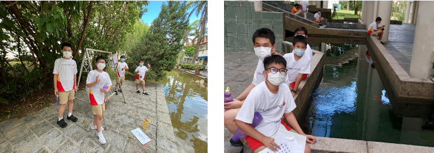
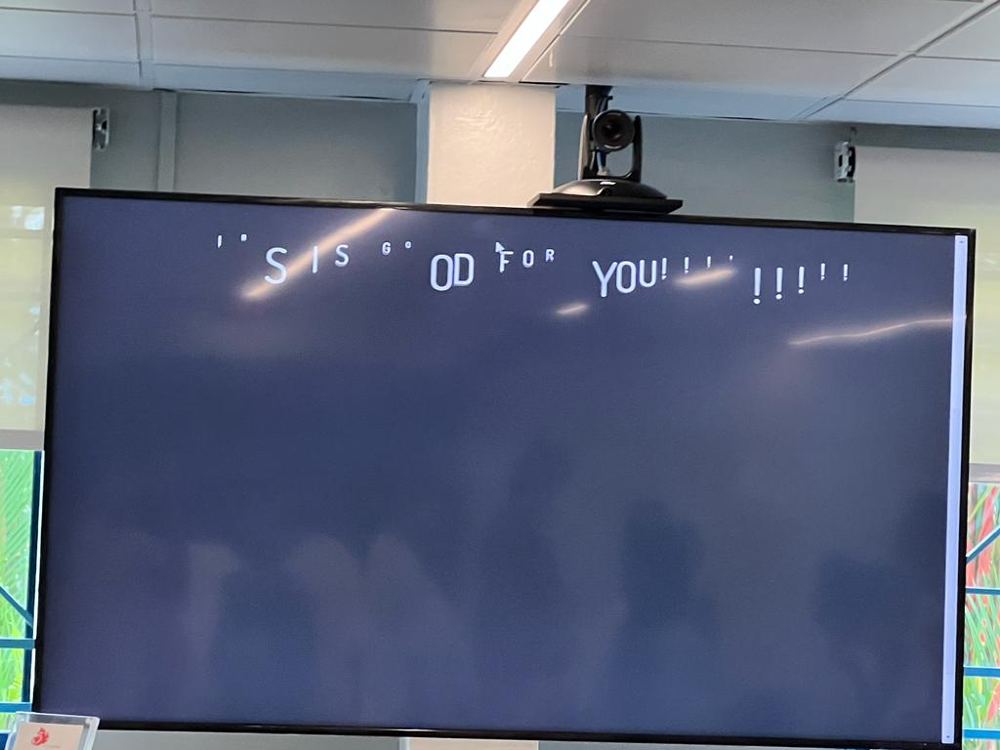

SOAC & SOO
In my 1st year, I had to go for the Sec One Orientation and Sec One Adventure Camp. During the SOAC and SOO, I bonded with my classmates and got a chance to relieve stress. These left an impact on me as it was not only fun, but also an experience that helped me bond with friends.
Sec 2 Science Olympaid

I consider this to be a milestone as the reason that I managed to get in was due to the hard work and effort I had put in last year. Currently, through this Olympiad, I have learnt about Sec 3 chemistry and physics. I have gained more interest in Science and hope to be able to continue learning about it in the future.
Sec 2 IRS Open House
At the open house, I got to show off my projects and talk about my CCA to P6 students and their parents. It felt really exciting to share what my CCA is all about and talk to them about the enriching experiences that await those who joined Hwa Chong. It felt nice to share my experiences with the future generation and hopefully make them feel more comfortable and familiar with Hwa Chong and our CCA should they join.
At the end, I was able to display my project on the projector to display a message so it was overall a great experience. I learnt to be confident and communicate with others effectively and I hope to be able to help out in more events such as this in the future.